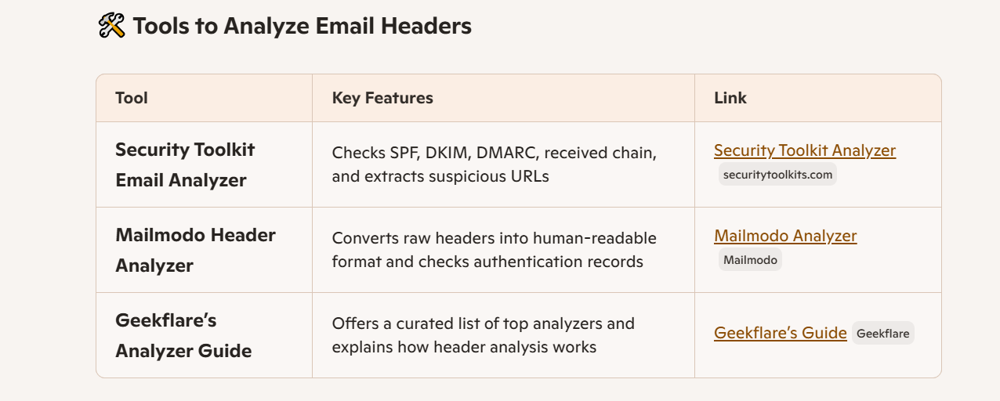

Interview Questions
1.What is phishing?
Phishing is basically a scam that uses fake emails to try and steal your personal information. The fake emails often pretend to be sent by respected companies like banks, internet service providers, credit card companies, etc. They often ask for things like usernames, passwords, account numbers, etc. If you click on the link in the email it will take you to a fake website or product that looks exactly like what it claims to be.
Types of Phishing EmailsPhishing
Spear Phishing
Spear phishing is a kind of phishing attack that targets one person (or company) in particular. Spear phishing is often used in ransomware attacks, where someone holding your files hostage sends you an email pretending to be from a reputable company like your internet service provider or antivirus software telling you that your computer is infected with malware. If you click on the link in the email it will take you to a fake website that looks legitimate so when you enter your email address and password to "scan" your computer, you just gave the criminal access to all of your accounts.
Vishing Attacks
Vishing is a kind of phishing that takes place over the phone. The criminal calls you and pretends to be from a company like your internet service provider, a bank, etc. They will try to trick you into giving up financial information or by directing you to visit a website where they can steal your login information.
SMiShing Attacks
SMiShing is a kind of phishing that takes place over text messages. The criminal sends you a text message pretending to be from a company like your bank asking for account information or they might send you links to websites where they can steal it. A lot of times the criminals will pretend to be with Google or Microsoft so it's even harder to discern whether or not the message is fake.
Pharming
Phishing attacks work by tricking people into giving up their sensitive information, but pharming tricks computers by changing Domain Name System (DNS) settings on a router. When you type in a website address your computer goes through several DNS servers before finding the correct IP address to direct you to the correct site. A DNS server is basically a system that points your computer in the right direction so when you type in an address, it can direct your computer to the right website. If someone poisons the DNS servers and redirects it to a fake site, you can fall victim to pharming. The criminal then gets access to all of the information you enter on that site.
Brand Spoofing
Brand spoofing is when a criminal pretends to be from a company or organization you trust and they use this brand recognition to trick you into giving up your sensitive information. For example, a criminal might send you an email with a logo from Google in the header pretending to be from Google asking for your password. Most people are comfortable giving their password to a company like Google so they will click on the link in the email, enter their information, and give it directly to the criminal.
2.How to identify a phishing email?
While phishing emails can cause serious damage, the good news is that there are a few common red flags you can identify in order to order falling prey to a phishing attack.
Phishing emails often:- Seem to be from legitimate companies like banks, internet service providers, credit card companies, etc.
- Are unsolicited (you didn't ask for it; they just sent it to you)
- Ask for things like usernames, passwords, account numbers, etc.
- Offer something seemingly valuable, like a prize or discount - Use poor spelling and grammar
- Have strange email addresses or typos in the email address - Have crazy titles
Here are a few real-world phishing email examples you may encounter:- A Fake FedEX message saying your package is stuck in customs and needs to be paid for with Bitcoin
- Emails from the "IRS" asking for overdue taxes, someone claiming to be from your internet service provider telling you that there's a problem with your account details (often including an email address that isn't yours), etc.
- Emails from a big company asking for input on new products, where they want you to click a link and provide your account number or password
3.What is email spoofing?
Email spoofing involves altering the email header to make it look like the message is coming from a legitimate sender, such as a friend, colleague, or
reputable organization. This is done by modifying the "From" address and other header information, which can mislead recipients into believing the
email is genuine. Since email protocols do not inherently authenticate sender addresses, it is relatively easy for attackers to execute this type of fraud.
Protection Against Email Spoofing- To protect against email spoofing, users should:
- Inspect Email Headers: Check the email headers for discrepancies in the sender's address.
- Be Cautious with Links: Avoid clicking on links in unsolicited emails and verify the sender's identity through other means.
- Use Security Protocols: Implement email authentication protocols like SPF, DKIM, and DMARC to help prevent spoofing
Learn More about Email Spoofing here What Is Email Spoofing? Definition & Examples | Proofpoint US
4.Why are phishing emails dangerous?
Phishing emails are dangerous because they exploit human trust and digital vulnerabilities to steal sensitive information or compromise systems. Here's how they do it:
Key Dangers of Phishing Emails
Identity Theft- Attackers impersonate trusted entities (banks, colleagues, government agencies) to trick you into revealing personal data like passwords, credit card numbers, or social security details.
Malware Installation
Clicking on links or downloading attachments can silently install malware, ransomware, or spyware on your device
Financial Loss- Phishing scams often lead to unauthorized transactions, drained bank accounts, or fraudulent purchases made in your name
Network Infiltration - Once inside a system, attackers can move laterally across networks, escalating privileges and accessing more sensitive areas.
5.How can you verify the sender’s authenticity?
Step-by-Step Methods to Verify Email Sender Authenticity
1. Check the Email Address Carefully- Look beyond the display name. For example, “Amazon Support” might actually be support@amaz0n-fake.com.
- Watch for subtle misspellings or extra characters in the domain name.
2. Inspect the Domain Reputation- Use tools like Hunter’s Email Verifier to check if the domain is legitimate and active.
- Trusted domains usually have proper DNS records and authentication protocols.
3. Look for Authentication Headers- Advanced users can check email headers for:
- SPF (Sender Policy Framework): Verifies the sender’s IP is authorized.
- DKIM (DomainKeys Identified Mail): Ensures the email hasn’t been tampered with.
- DMARC (Domain-based Message Authentication): Aligns SPF and DKIM for domain protection
4. Evaluate the Email Content- Generic greetings (“Dear Customer”), urgent language, or suspicious links are red flags.
- Hover over links to preview the URL—don’t click unless you’re sure.
5. Use External Verification- If unsure, contact the sender through a known channel (e.g., call your bank directly).
- Never reply to the suspicious email itself.
6. Check for Digital Signatures- Some legitimate emails include digital signatures or certificates that confirm authenticity.
6.What tools can analyze email headers?

Click here to Analyze Email Header At Mailmodo header Free Email Message Header Analyzer
Click here to go Geekflare All You Need to Know About Email Header Analysis [+6 Best Analyzers]
7.What actions should be taken on suspected phishing emails?
Immediate Actions to Take
Do Not Interact- Avoid clicking links, downloading attachments, or replying.
- Even previewing images can trigger tracking.
Verify the Sender- Check the sender’s email address carefully.
- Use tools like SPF, DKIM, and DMARC records to validate authenticity (you might enjoy diving deeper into these protocols)
Inspect the Email Header- Analyze routing paths and IP addresses.
- Look for anomalies like mismatched domains or forged "Return-Path" fields.
Report the Email- Use your email client’s “Report Phishing” feature.
- Forward the email to your organization’s IT or security team.
- In India, you can report to report@cybercrime.gov.in.
Block the Sender- Add the sender to your block list to prevent future attempts.
Post-Detection Steps (If You Clicked or Responded)
Disconnect Immediately- If you clicked a malicious link, disconnect from the internet to prevent further data exfiltration.
Run a Full Security Scan- Use antivirus or endpoint protection tools to detect malware.
Change Passwords- Especially for accounts that may have been compromised.
Enable Multi-Factor Authentication (MFA)- Adds a layer of protection even if credentials are leaked.
Monitor Accounts- Watch for suspicious activity in email, banking, and social media.
8.How do attackers use social engineering in phishing?
Core Social Engineering Tactics in Phishing
Pretexting- The attacker creates a believable backstory (e.g. pretending to be your bank, HR, or a trusted vendor).
- Goal: Establish legitimacy to extract sensitive info like login credentials or financial data.
Urgency and Fear- Messages often claim your account will be locked, or you've missed a payment.
- This triggers impulsive action before rational thinking kicks in.
Authority Exploitation- Emails may appear to come from a CEO, government agency, or IT admin.
- People are more likely to comply with perceived authority figures.
Familiarity and Trust- Attackers spoof known contacts or use breached data to personalize messages.
- This builds trust and lowers suspicion (e.g. “Hi Sanjay, here’s the invoice we discussed”).
Scarcity and Opportunity- “Limited-time offer” or “exclusive access” tricks you into clicking without scrutiny.
- Often used in credential harvesting or malware delivery.
Emotional Manipulation- Appeals to empathy (“Help a colleague in distress”) or curiosity (“Look who mentioned you!”).
- These emotional triggers override logical caution.
Humans are the weakest link in cybersecurity because:- We’re wired to trust familiar names and respond to urgency.
- We often multitask, making us prone to overlook red flags.
- Attackers exploit cognitive biases like authority bias, reciprocity, and loss aversion.